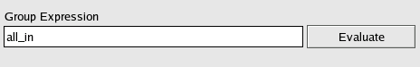
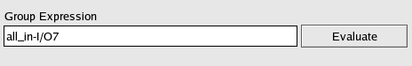
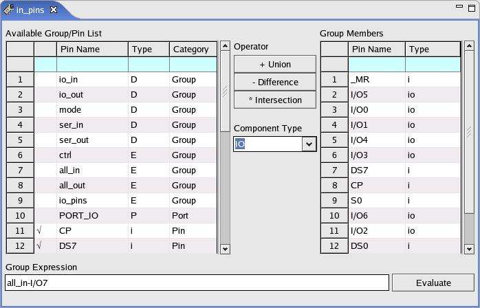

Editing an expression-based group
About this task
Whichever action you selected:
- to define a new expression-based group from scratch
- to make changes to an existing expression-based group
the way you edit the group is always the same.
Expression-based groups are defined by group expressions and the process consists of three basic steps:
- Defining the group expression
- Selecting the component type
- Evaluating the group expression
Before you begin
Make sure that an expression-based group has been created.
Procedure
Results
After the expression is evaluated, the pins in the group are indicated in the Group Members area. Considering the chosen component type, inactive pins in the list are marked with "*".
In the Available Group/Pin List, the pins in the group are indicated with "√".

Example
A group contains all the input pins (all_in), without the pin I/O7. So the expression is all_in - I/O7.
After selecting I type, the steps for building such expression are:
- Click group all_in in the Available Group/Pin
List and then click operator + Union. This results in the
following group expression.

- Click pin I/O7 in the Available Group/Pin List and then click
operator - Difference. This results in the final group expression.

- To evaluate the group expression, click Evaluate. The pins are
printed to the Group Members area.

Functional changes
- Introduced before SmarTest 6.3.2
- SmarTest 6.5.3: The pin alias can be added to the expression-based pin group.